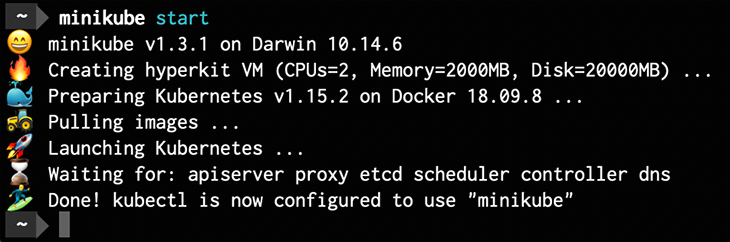

Instantly productive.
A single command away from reproducing your production environment, from the comfort of localhost.

Highlights
- Always supports the latest Kubernetes release (as well as previous versions)
- Cross-platform (Linux, macOS, Windows)
- Infinitely configurable local development environment
- Multiple container runtimes (crio, containerd, docker, gvisor)
- Provides a Docker API endpoint
{{< /blocks/lead >}}
{{< blocks/section color="white" >}}
{{% blocks/feature icon="fa-star" title="Developer focused" %}}
- [LoadBalancer emulation](https://minikube.sigs.k8s.io/docs/tasks/loadbalancer/)
- [Addons Marketplace](https://minikube.sigs.k8s.io/docs/tasks/addons/)
- [Integrated Dashboard](https://minikube.sigs.k8s.io/docs/tasks/dashboard/)
- [GPU support](https://minikube.sigs.k8s.io/docs/tutorials/nvidia_gpu/)
- Reusable Docker daemon
{{% /blocks/feature %}}
{{% blocks/feature icon="fa-cogs" title="Infinitely configurable" %}}
- Any container runtime
- Any Kubernetes version
- Any apiserver, kubelet, controller, etcd, proxy, or scheduler option
{{% /blocks/feature %}}
{{% blocks/feature icon="fa-thumbs-up" title="Cross-platform" %}}
- KVM
- Docker
- HyperKit
- Bare-metal
- VirtualBox
- Hyper-V
- VMware
- Podman
{{% /blocks/feature %}}
{{< /blocks/section >}}
{{< blocks/section color="light" >}}
{{% blocks/feature icon="fab fa-slack" title="Chat with us on Slack" %}}